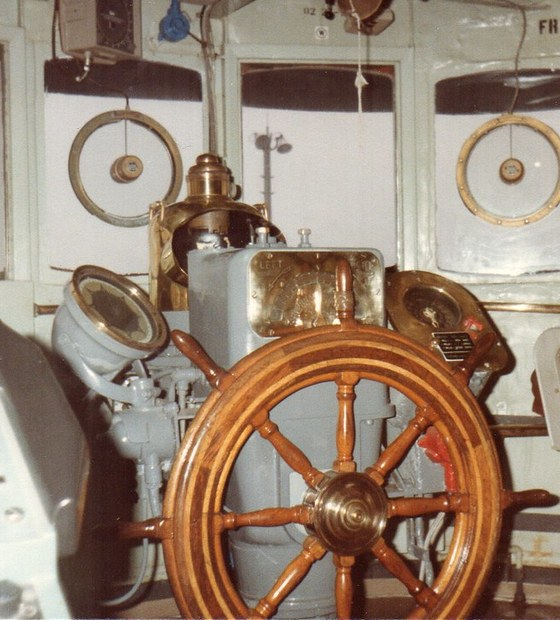

// Über uns
Backstein außen.
Präzision innen.
2011 mit zwei Schreibtischen und einem Faxgerät gestartet. Heute: 62 Mitarbeitende, drei Auslandsbüros, ein Meridian.
// Geschichte
Gegründet zwischen
Fleet und Fahrrinne.
Henrik Volquardsen fuhr zehn Jahre als Schiffsoffizier, bevor er 2011 in der Speicherstadt die Nordmeridian Logistik gründete. Die Idee war unbescheiden einfach: Spedition so betreiben, wie man eine Brücke besetzt – wach, vorausschauend und ohne Ausreden.
Daraus wurde ein Unternehmen, das heute 17.500 Sendungen pro Jahr über 45 Länder steuert – und trotzdem jeden Kunden mit Namen kennt. Der Kaffee im Erdgeschoss ist übrigens immer noch derselbe: schwarz, stark, hanseatisch.
// Meilensteine
Fünfzehn Jahre auf Kurs.
-
2011
Gründung in der Speicherstadt – zwei Schreibtische, ein Kunde, viel Elbluft.
-
2015
Eigene Zollabteilung und AEO-Zertifizierung. Die Speicherstadt wird Welterbe – wir bleiben trotzdem bezahlbar.
-
2019
Partnerbüros in Rotterdam und Singapur. Erste Projektverladung über 300 Tonnen.
-
2023
Der Kontrollturm geht in den 24/7-Betrieb. Termintreue steigt auf über 98 %.
-
2026
Büro New York eröffnet. 45 Länder im Netzwerk, 62 Menschen an Bord.
// Führung
Die Brücke.

Henrik Volquardsen
Gründer & Geschäftsführer · Ex-Schiffsoffizier
Sina Petersen
Geschäftsführerin Operations · Zoll & Compliance
Deniz Kaya
Leiter Kontrollturm · Projektlogistik
// Nächster Schritt
Kommen Sie an Bord.
Ein Gespräch, ein Kaffee, ein Plan für Ihre Lieferkette.